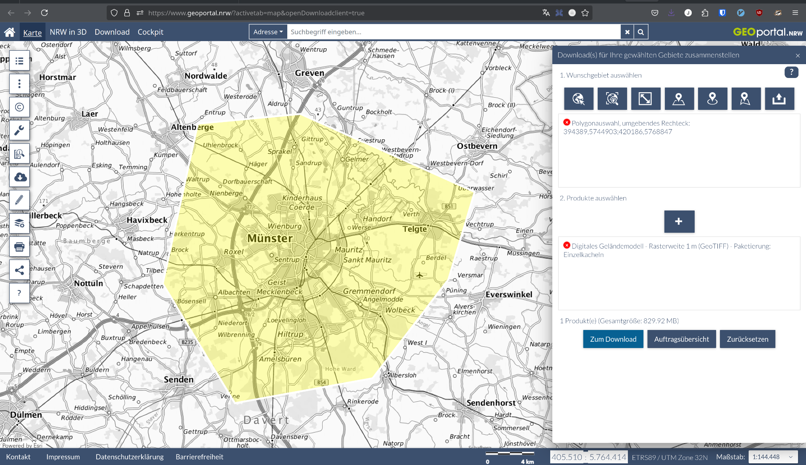

OSM-Transform - PBF-Dateien anreichern und filtern#
1. Einführung#
OSM-Transform ermöglicht es, OpenStreetMap-Daten (PBF-Dateien) zu filtern und mit zusätzlichen Informationen anzureichern. Ziel von OSM-Transform ist, die OSM-Daten für die Verwendung in Routing-Engines wie openrouteservice (ORS) vorzubereiten und zu optimieren.
Zu den Hauptfunktionen gehören:
Filtern von PBF-Dateien nach geografischen Gebieten
Anreicherung mit Höhendaten (DEM - Digital Elevation Model)
Anreicherung mit Ländergrenzen und administrativen Grenzen
Optimierung der Daten für nachfolgende Verarbeitungsschritte mit ORS
2. Voraussetzungen#
Docker: Container-Plattform für die OSM-Transform-Installation
cURL: Kommandozeilentool für HTTP-Anfragen
Linux oder macOS: Betriebssysteme mit vollen Docker-Funktionen
3. Arbeitsumgebung einrichten#
Verzeichnisstruktur erstellen#
Wir erstellen zunächst eine geeignete Verzeichnisstruktur für unsere Daten:
mkdir -p ./osm-transform/data/osm ./osm-transform/data/elevation ./osm-transform/data/output
PBF-Dateien herunterladen#
Für diesen Workshop benötigen wir eine OSM-Datei. Wir verwenden als Beispiel erneut die Münster-Region:
# Münster PBF-Datei herunterladen
curl -C - https://download.geofabrik.de/europe/germany/nordrhein-westfalen/muenster-regbez-latest.osm.pbf -o ./osm-transform/data/osm/muenster-regbez-latest.osm.pbf
4. OSM-Transform mit Docker ausführen#
Basisbefehl#
Der grundlegende Docker-Befehl zum Ausführen von OSM-Transform ist wie folgt:
docker run --rm \
-v ./osm-transform/data/osm:/app/osm \
-v ./osm-transform/data/output:/app/out \
heigit/osm-transform:latest \
-i /app/osm/muenster-regbez-latest.osm.pbf \
-o /app/out/muenster.ot.pbf \
-vvv
Erklärung der Parameter#
Docker-Optionen:
--rm: Container nach Ausführung entfernen.-v ./osm-transform/data/osm:/app/osm: Einbinden des lokalen OSM-Verzeichnisses.-v ./osm-transform/data/output:/app/out: Einbinden des Ausgabeverzeichnisses.
OSM-Transform-Parameter:
-i /app/osm/muenster-regbez-latest.osm.pbf: Eingabe-PBF-Datei.-o /app/out/muenster.ot.pbf: Ausgabe-PBF-Datei.-vvv: Ausführliche Protokollierung (sehr detailliert).
Ergebnis überprüfen#
Die Ausgabe enthält Zusammenfassung der Verarbeitungsschritte und eine Erfolgsmeldung.
ls -lh ./osm-transform/**/*.pbfzeigt die Größe der PBF-Dateien an. Gut, um diese vor und nach der Verarbeitung zu vergleichen.
Wie Sie sehen können wurde die Anzahl der Nodes von 13 Millionen auf 2 Millionen und die Anzahl der Ways von 2 Millionen auf 450.000 reduziert. Dies ist ein wichtiger Schritt zur Optimierung der Daten für die Verwendung in Routing-Engines. Je weniger Daten gelesen und verarbeitet werden müssen, desto schneller ist die Erstellung des Routing-Graphens.
5. Fortgeschrittene Konfiguration#
PBF-Dateien mit Höheninformationen anreichern#
Für die Anreicherung mit Höhendaten benötigen wir hochauflösende DGM-Dateien. Verwendet werden können alle im GeoTIFF-Format vorliegenden Höhendaten.
Anleitung zum Herunterladen der Höhendaten vom Geoportal NRW#
# Verzeichnis für Höhendaten erstellen
mkdir -p ./osm-transform/data/elevation/
In diesem Beispiel verwenden wir das Geoportal NRW, um Höhendaten für die Münster-Region herunterzuladen:
Besuchen Sie die Website: https://www.geoportal.nrw/?activetab=map
Klicken Sie in der Menüleiste auf “Download”
Zeichnen Sie das gewünschte Gebiet auf der Karte auf. Beispiel: Münster.
Wählen Sie anschließend bei Produkten “Digitales Geländemodell - Rasterweite 1 m (GeoTIFF) - Paketierung: Einzelkacheln” aus.
Beim Klick auf “Zum Download” wird ein ZIP-Archiv heruntergeladen.
Entpacken Sie das ZIP-Archiv und verschieben Sie die enthaltenen GeoTIFF-Dateien in das Verzeichnis
./osm-transform/data/elevation/.

# Entpacken und verschieben (Beispiel)
unzip -o ~/Downloads/dgm1_tiff_kacheln.zip -d ./osm-transform/data/elevation/
OSM-Daten mit Höheninformationen anreichern und Ways splitten#
docker run --rm \
-v ./osm-transform/data/osm:/app/osm \
-v ./osm-transform/data/elevation:/app/elevation \
-v ./osm-transform/data/output:/app/out \
heigit/osm-transform:latest \
-i /app/osm/muenster-regbez-latest.osm.pbf \
-o /app/out/muenster.ot.pbf \
-e '/app/elevation/*.tif' \
-w \
-vvv
-v ./osm-transform/data/elevation:/app/elevation: Einbinden des Höhendatenverzeichnisses.-e '/app/elevation/*.tif': Regex-Muster für Höhendateien.-w: Aktiviert das Way-Splitting für große Dateien.
Der Terminal-Output zeigt die Anzahl der Ways, die aufgeteilt wurden, und die Anzahl der Höheninformationen, die hinzugefügt wurden.
6. Ergebnisse prüfen#
Nach der Verarbeitung können Sie die neue PBF-Datei überprüfen:
# Beispiel mit osmium
docker run --rm -v ./osm-transform/data/output:/data iboates/osmium:latest fileinfo /data/muenster.ot.pbf
Alternativ können Sie die Datei in QGIS öffnen. Dies ermöglicht eine visuelle Überprüfung der Daten.
7. Integration mit dem ORS#
Die mit OSM-Transform verarbeiteten PBF-Dateien sind ideal für die Verwendung mit ORS, da sie bereits Höheninformationen enthalten, die Ways aufgeteilt und die Dateien gefiltert sind. Die reduzierte Dateigröße ermöglicht eine schnellere Verarbeitung.
Beispiel: Verarbeitete PBF-Datei mit dem ORS verwenden#
# Stellen Sie sicher, dass die neue PBF-Datei im richtigen Verzeichnis ist
cp ./osm-transform/data/output/muenster.ot.pbf ./ors-docker-latest/files/
# Passen Sie die docker-compose.yml an, um auf die neue Datei zu verweisen
# ORS_ENGINE_PROFILES_DRIVING_CAR_BUILD_SOURCE_FILE=/home/ors/files/muenster.ot.pbf
# Starten Sie den ORS
docker-compose up ors-app -d
8. Aufräumen und Ressourcen freigeben#
Nach Abschluss des Workshops sollten Sie nicht mehr benötigte Dateien löschen, um Speicherplatz freizugeben:
# Optional: Temporäre Dateien löschen
rm -rf ./osm-transform/
9. Zusammenfassung#
In diesem Tutorial haben Sie gelernt:
Wie Sie OSM-Transform mit Docker einrichten und ausführen.
Wie Sie PBF-Dateien mit Höhendaten anreichern.
Wie Sie Ways splitten, die mehrere Höheninformationen enthalten.
Wie Sie die Ergebnisse mit anderen Tools wie QGIS oder den ORS integrieren können.
Die verarbeiteten PBF-Dateien können nun für verschiedene Anwendungen verwendet werden, von der Routenberechnung bis hin zur räumlichen Analyse.